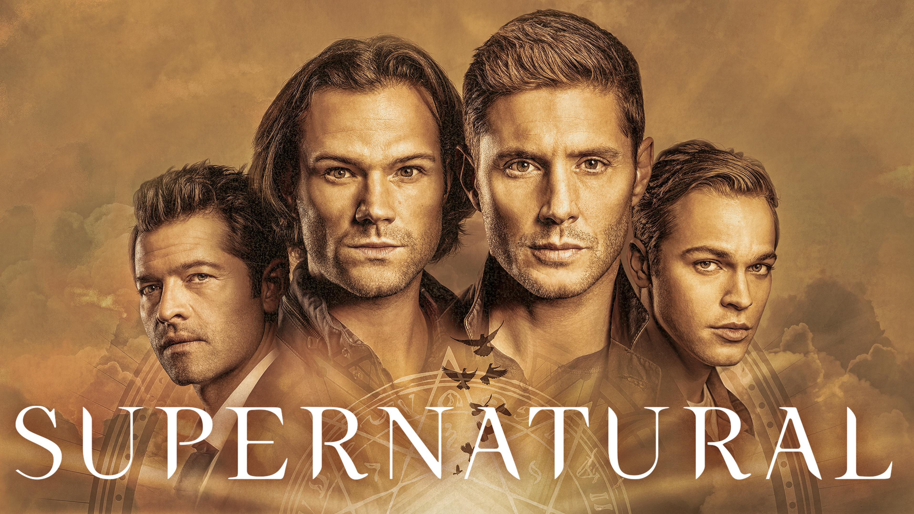

Supernatural é uma série de televisão norte-americana de fantasia sombria e urbana que estreou em 13 de setembro de 2005 no canal The WB, posteriormente parte do The CW. Criada por Eric Kripke, a série acompanha os irmãos Sam e Dean Winchester, interpretados por Jared Padalecki e Jensen Ackles, respectivamente. Após a morte misteriosa da mãe deles, causada por forças sobrenaturais, o pai os treina para caçar demônios, fantasmas, vampiros e outras criaturas sobrenaturais, utilizando um Chevrolet Impala 1967 como seu principal meio de transporte.
Ao longo de 15 temporadas e 327 episódios, a trama evolui de casos semanais para uma narrativa mais complexa envolvendo anjos, demônios e até mesmo a luta contra Deus. A série tornou-se um fenômeno cult, com uma base de fãs dedicada que participa ativamente de convenções e cria fanfics.
No Brasil, Supernatural foi exibida pelo SBT de 2006 a 2018 e atualmente está disponível para streaming no Globoplay e Amazon Prime Video.
Em resumo, Supernatural é uma série que combina elementos de horror, drama e fantasia, explorando temas como família, sacrifício e destino, e deixou um legado duradouro na cultura pop.
Fontes
TecMundo
Wikipédia
A série foi concluída em 19 de novembro de 2020, com um episódio final que recebeu críticas mistas devido às limitações impostas pela pandemia de COVID-19, que afetaram a produção e o desenvolvimento da narrativa.